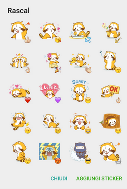
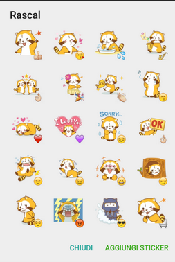

Telegram doesn't it sounds like Instagram? Anyway it sounds like but the real thing is that Telegram is made with very advanced features in it. Telegram uses your smartphone's phone number as your messenger ID. You can share documents and media files with other Telegram users.
The Telegram app is available for Android, iOS (iPad, iPhone), Linux, macOS and Windows. It also has a website version that you can use through most browsers.
Telegram accounts are tied to telephone numbers and are verified by SMS or phone call. Users can add multiple devices to their account and receive messages on each one. Connected devices can be removed individually or all at once. The associated number can be changed at any time and when doing so, the user's contacts will receive the new number automatically. In addition, a user can set up an alias that allows them to send and receive messages without exposing their phone number.
Telegram's default messages are cloud-based and can be accessed on any of the user's connected devices. Users can share photos, videos, audio messages and other files (up to 1.5 gigabyte in size per file). Users can send messages to other users individually or to groups of up to 100,000 members. Sent messages can be edited and deleted on both sides within 48 hours after they have been sent. This gives user an ability to correct typos and retract messages that were sent by mistake.

1.Introduction
2.What is telegram
2. Features
a) Accounts
b) Cloud-based Messages
c) Channels
d) Stickers
e) Voice calls
f) Live Locations
3. Users
4. Censorship of Telegram
Creating a Secret Chat is a two-click process. This feature enables an end-to-end encryption for the highly secure messaging. The platform developers cailmed that no other third-party can involve in it.
Stickers are cloud-based, high-definition images intended to provide more expressive emoji. When typing in an emoji, the user is offered to send the respective sticker instead. Stickers come in collections called "sets", and multiple stickers can be offered for one emoji. Telegram comes with one default sticker set,but users can install additional sticker sets provided by third-party contributors.
 

In the end of March 2017, Telegram introduced its own voice calls. The calls are built upon the end-to-end encryption of Secret Chats. Connection is established as peer-to-peer whenever possible, otherwise the closest server to the client is used. According to Telegram, there is a neural network working to learn various technical parameters about call to provide better quality of the service for future uses. After a brief initial trial in Western Europe, voice calls are now available for use in most countries.
For either 15 minutes, one hour, or eight hours, Telegram users can share their live location in a chat since version 4.4 released in October 2017.[81] If multiple users share their live location within a group, they are shown on an interactive map. Sharing the 'live location' can be stopped at any time.
Telegram is becoming one of the fastest messeging app in the world. Due to its fast messages it has gone popularity among the people.
Telegram can't access data from the user's account. The reason behind it is that, they are privacy focused on their users. A two-layered encryption keeps the user's data safe from anyone even the government. Telegram is becoming increasingly famous for the privacy-oriented users.